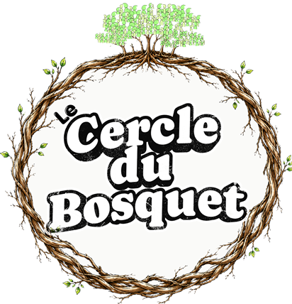

Conception & facilitation d’ateliers
Clarifier l’intention, choisir le bon format et construire un déroulé qui permet au groupe d’avancer réellement.
Séminaires, ateliers collaboratifs, intelligence collective, communautés de pratique.
Stéphane Vandenbussche
J’aide les équipes et les personnes qui les accompagnent à concevoir des moments collectifs utiles, vivants et engageants.
Une palette de prestations
Selon votre besoin, j’interviens pour préparer, animer, transmettre ou rendre visible ce qui compte.
Clarifier l’intention, choisir le bon format et construire un déroulé qui permet au groupe d’avancer réellement.
Séminaires, ateliers collaboratifs, intelligence collective, communautés de pratique.
Faire émerger les idées, les rendre visibles et créer une mémoire commune qui facilite les échanges et les décisions.
Captation en direct, fresques, sketchnotes, synthèses visuelles.
Accompagner une équipe, un rôle ou une transformation en partant du terrain et de la capacité d’action.
Agilité, Scrum, OKR, management visuel, dynamiques d’équipe.
Donner une forme claire, accessible et mémorable à vos idées, vos messages et vos démarches.
Illustrations, storytelling visuel, présentations, personal branding.
Apprendre en faisant
Des apports simples, beaucoup de pratique et le droit d’expérimenter. Chaque formation peut être adaptée à votre contexte.
Moments collectifs
Passer d’une idée à un atelier cohérent en travaillant le Pourquoi, le Produit, les Participants, le Lieu, la Préparation, la Pratique et le Processus.
Pensée visuelle
Dépasser la peur de dessiner et acquérir un vocabulaire visuel simple pour expliquer, animer et mémoriser.
Transmission
Créer une expérience d’apprentissage active, structurée et adaptée aux besoins réels des participants.
Un même chemin possible : une ressource pour découvrir → un mini-atelier pour essayer → une formation pour approfondir.

Le Cercle du Bosquet
Un mentorat dans la durée pour préparer vos ateliers, réunions, formations et supports, puis prendre du recul après leur mise en pratique.
Rendez-vous individuels, échanges asynchrones, temps collectifs, communauté de pratique et bibliothèque vivante.
Découvrir le Cercle du BosquetPour passer à l’action
Templates, mini-ateliers et supports pour commencer à concevoir vos moments collectifs et développer votre pratique visuelle.
Retrouvez notamment le template 7P et ses mini-ateliers, ainsi que mes autres supports en ligne.
À propos
Je suis Stéphane Vandenbussche, coach agile, facilitateur visuel et formateur. J’accompagne les collectifs pour qu’ils réfléchissent, décident et avancent ensemble avec plus de clarté.
Mon approche mêle design d’atelier, intelligence collective, agilité et pensée visuelle. L’objectif n’est pas d’appliquer une recette, mais de développer votre propre capacité d’action.
Un atelier, une formation, un besoin à clarifier ?